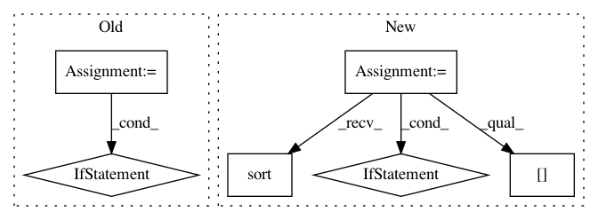

ff5bbede0431e5296811dc57432a33a9a68942d0,pysos/dag.py,SoS_DAG,build,#SoS_DAG#Any#,225
Before Change
//
// for some code using attributes
for node_i in self.nodes():
for node_j in self.nodes():
if node_i == node_j:
continue
if node_i.depends_on(node_j):
self.add_edge(node_j, node_i)
if node_j.depends_on(node_i):
self.add_edge(node_i, node_j)
def write_dot(self, filename):
try:
nx.drawing.nx_pydot.write_dot(self, filename)
except Exception as e:
After Change
// refer to http://stackoverflow.com/questions/33494376/networkx-add-edges-to-graph-from-node-attributes
//
// several cases triggers dependency.
indexed = [x for x in self.nodes() if x._node_index is not None]
indexed.sort(key = lambda x: x._node_index)
for idx, node in enumerate(indexed):
// 1. if a node changes context (using option alias), all later steps
// has to rely on it.
if node._change_context:
for later_node in indexed[idx + 1: ]:
self.add_edge(node, later_node)
// 2. if the input of a step is undetermined, it has to be executed
// after all its previous steps.
if isinstance(node._input_targets, Undetermined) and idx > 0:
self.add_edge(indexed[idx-1], node)
//
// 3. if the input of a step depends on the output of another step
In pattern: SUPERPATTERN
Frequency: 4
Non-data size: 6
Instances
Project Name: vatlab/SoS
Commit Name: ff5bbede0431e5296811dc57432a33a9a68942d0
Time: 2016-09-22
Author: ben.bog@gmail.com
File Name: pysos/dag.py
Class Name: SoS_DAG
Method Name: build
Project Name: biotite-dev/biotite
Commit Name: b44dc788d6eaf6fe53cb6468763b46a0c4c74a12
Time: 2020-12-22
Author: anter.jacob@gmail.com
File Name: src/biotite/structure/charges.py
Class Name:
Method Name: partial_charges
Project Name: kmike/pymorphy2
Commit Name: 837b2efde71507b09033c3ea6f2502e2306f8eef
Time: 2013-02-18
Author: kmike84@gmail.com
File Name: pymorphy2/analyzer.py
Class Name: MorphAnalyzer
Method Name: _parse_as_word_with_known_suffix
Project Name: vatlab/SoS
Commit Name: c8788d2eedcdb2671289d7d47a41b8fdcb0294f1
Time: 2017-09-11
Author: ben.bog@gmail.com
File Name: src/sos/sos_executor.py
Class Name: Base_Executor
Method Name: resolve_dangling_targets